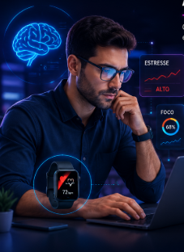

Tecnologia inspirada em missões espaciais para prevenir fadiga mental, reduzir riscos de burnout e melhorar o desempenho humano em ambientes urbanos e corporativos.
Em ambientes de alta pressão, como empresas, hospitais, centros de controle, universidades e o cotidiano das grandes cidades, a fadiga mental tornou-se um dos maiores desafios da atualidade. Essa sobrecarga cognitiva acontece quando o cérebro recebe mais estímulos e informações do que consegue processar de forma saudável. Isso pode gerar:
Muitas pessoas só percebem esses sinais quando os sintomas já estão avançados. Por isso, ORBIT MIND identifica sinais de sobrecarga cognitiva antes que eles se tornem um problema.
O ORBIT MIND combina monitoramento biométrico, inteligência artificial e análise de dados para prevenir fadiga cognitiva. A solução utiliza:
Dispositivo como pulseira, relógio ou faixa biométrica que coleta dados como frequência cardíaca, sono e níveis de estresse em tempo real.
IA que analisa os dados coletados e identifica sinais de fadiga, estresse e sobrecarga cognitiva, gerando alertas preventivos ao usuário..
Armazena dados e processa informações para monitoramento contínuo através de indicadores de desempenho e bem-estar.
Plataforma digital que apresenta através de gráficos, relatórios, indicadores de saúde mental, alertas de risco e recomendações para melhorar o desempenho cognitivo.
O principal objetivo é monitorar o estado cognitivo dos usuários para aumentar segurança, bem-estar e produtividade. Entre eles estão:
A solução pode beneficiar diversos setores da sociedade:
Identifica sinais de esgotamento antes que eles afetem o desempenho.
Gera recomendações de acordo com o perfil fisiológico e comportamental de cada usuário.
Ajuda o usuário a reconhecer e controlar momentos críticos.
Favorece foco, atenção e melhor tomada de decisões.

O dispositivo coletará informações fisiológicas e comportamentais em tempo real.
O sistema processará os dados e gerará indicadores de desempenho cognitivo.
O sistema detectará sinais de estresse e fadiga antes que afetem o usuário.
O sistema enviará alertas e recomendações para manter o equilíbrio mental.
Enzo Oldani - RM571685 | Giulia Russo - RM571468 | Kauan Merida - RM573997 | Kayque Amaro - RM572031 | Victoria Bandeira - RM571183